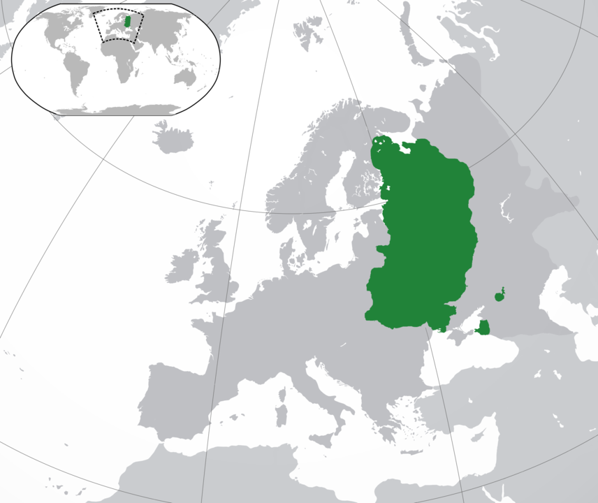
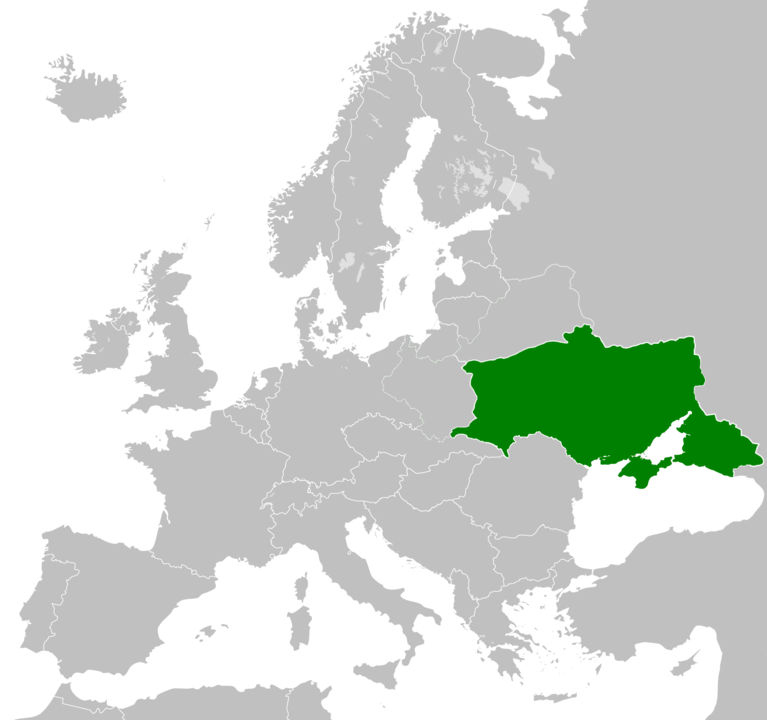
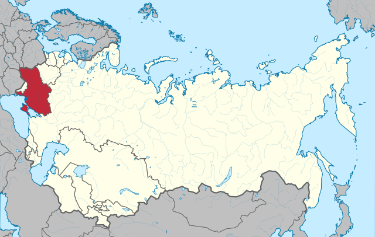
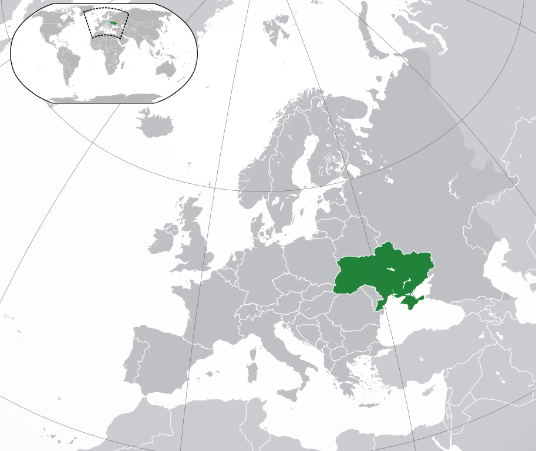
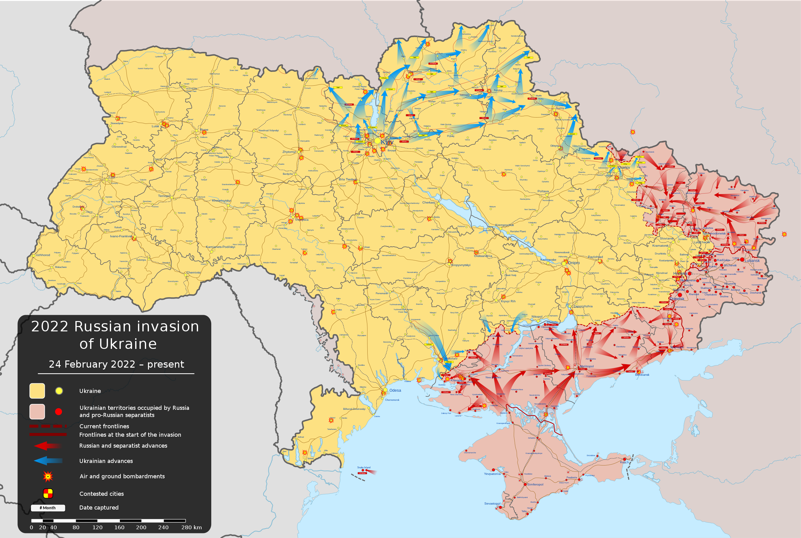
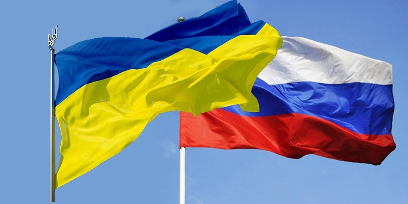

Gemeinsame Frühgeschichte
Der Konflikt zwischen Russland und der Ukraine ist keine Ausgeburt der Neuzeit, sondern vielmehr eine Geschichte der Identitätsfrage. Eine Geschichte die von Leid und Konflikt nach wie vor bestimmt wird. Und eine Geschichte, die über all die Jahrhunderte beiden Seiten schwere Verluste erbrachte.
Sie beginnt mit der sogenannten Kiewer Rus um 1000 vor Christus, einem ostslavischem Großreich, welches als Vorläufer der heutigen Staaten Russland, Ukraine und Belarus gilt. Im Ostteil des Reiches wurde später das russische Zarenreich gegründet, während der Westen im 16. Jahrhundert unter polnische Herrschaft geriet.
Doch wurden die Länder nicht nach heutigem Maßstab getrennt; große Teile der Ukraine fielen an Russland, doch gehörte der äußerste Westen, Galizien, zu Österreich Ungarn. Andere Teile der Ukraine, einschließlich der Krim, standen unter der Kontrolle des Osmanischen Reiches und wurden im 18. Jahrhundert von Russland erobert.
Zunächst wurde die Ukraine als “Kleinrussland” bezeichnet, mit Bezug auf Kiew als historisches Kernland. Im Westen allerdings, vor allem unter Einfluss von Polnischen und Österreich-Ungarischen Machthabern, entwickelte sich eine Ukrainische Identität.

Die “erste Ukraine”
Die Russische Oktoberrevolution 1917 und der Zusammenbruch des Vielvölkerstaates Österreich-Ungarns nach dem ersten Weltkrieg ermöglichten die Existenz des ersten modernen ukrainischen Staates, der Ukrainischen Volksrepublik. 1920 wurde diese allerdings bereits von der roten Armee besetzt, bevor die Ukraine durch den Frieden von Riga 1921 erneut unter den Ländern Polen, Rumänien und der Tschechoslowakei aufgeteilt wurde. Die übrigen Teile wurde als ukrainische Sowjetrepublik Teil der UdSSR.

Die “Ukrainische Sozialistische Sowjetrepublik”
Wie auch heute hatte die Ukraine schon damals eine wichtige Funktion als “Kornkammer” und nahm entsprechend diese Rolle in der UdSSR ein. Doch durch die Zwangskollektivierung unter Stalin wurde eine Hungersnot, der Holodomor, ausgelöst, die ca. 2,3 Millionen Menschen das Leben kosten sollte. Als wäre das noch nicht genug, wurde die Ukraine während des zweiten Weltkriegs als ein westlicher Teil der UdSSR früh von der Wehrmacht besetzt. Schätzungsweise 6,5 Millionen Menschen fielen dem Nationalsozialismus und dem Krieg zum Opfer. Gleichzeitig kämpfte eine Unabhängigkeitsbewegung im Westen des Landes jedoch nicht nur gegen die vorrückenden Deutschen, sondern auch gegen die Sowjetarmee und die Polnische Bevölkerung.
Auch nach dem Krieg blieb die Ukraine Teil der Sowjetunion. 1954 wurde die Krim als Geschenk an die Ukraine übergeben, etwas, das noch heute für Konflikte sorgt.

Ende der Sowjetunion
Als die Sowjetunion aufgelöst wurde, erlangte auch die Ukraine 1991 ihre Unabhängigkeit. Nichtsdestotrotz blieb sie stark von Russland abhängig, sowohl finanziell als auch kukranulturell. Daraufhin folgte eine Suche nach der Identität, hin und her gerissen zwischen der EU und der NATO im Westen und der historischen Bindung mit dem östlichen Nachbarn. Immerhin muss man im Hinterkopf behalten; nach ca. 1000 Jahren gemeinsamer Geschichte kann man mit Sicherheit von Bruderstaaten sprechen, die sich in Kultur und Sprache zwar unterscheiden, doch ihre gemeinsamen Ursprünge nicht leugnen können.

Das letzte Jahrzehnt
Nach diesen 1000 Jahren gemeinsamer Geschichte kann man sicher behaupten, dass die 23 Jahre von 1991 bis 2014 in der Russisch-Ukrainischen Beziehung relativ sachte Waren. In diesem Zeitraum gab es keinen Krieg zwischen beiden Ländern und sowohl Russland als auch die Ukraine konnte sich ökonomisch und wissenschaftlich weiterentwickeln. Das änderte sich allerdings als Russland 2014 die Krim annektierte. Das Geschenk, welches Nikita Chruschtschow der Ukraine 1954 zum 300-Jährigen Jubiläum der Russisch-Ukrainischen Einheit machte, sollte nun den Beginn eines neuen Konfliktes werden.
Die ohnehin schon kühlen Beziehungen zwischen Kiew und Moskau wurden noch schlechter.
Im selben Jahr begann der Krieg im Donbas, den Oblasten Donezk und Luhansk, wo Pro-Russische Seperatisten und (inoffiziell) Russische Soldaten für eine Abspaltung der Region von der Ukraine kämpften.
Der Frieden, der (verhältnismäßig) lange die Entwicklung beider Länder ermöglicht hatte, war nun gebrochen.
Doch das sollte nur der Anfang sein.
Im Februar 2022 begann der Russische Überfall auf die Ukraine.

Stand: 15 Mai 2022
Freundschaft - besser als Feindschaft
Beziehungen wie die zwischen Russland und der Ukraine gibt es tatsächlich mehrfach. Das Konzept “Bruderstaat” ist auch nicht neu. Viele Länder, die eine ähnliche Gemeinsame Geschichte wie Russland und die Ukraine haben (z.B. Österreich und Deutschland), stehen heute allerdings gut zueinander; eine ähnliche Geschichte und Kultur nimmt den Aspekt des Unwissens, der in der Vergangenheit schon so oft zu Konflikten geführt hat.
Bei der Ukraine und Russland ist das allerdings nicht der Fall. Die Feindschaft zwischen den beiden Ländern rührt von einem Überlegenheitsgefühl auf der Russischen Seite, welche nach wie vor der Aggressor ist.
Man möchte sich nur ausmalen, wo beide Länder heute wären, hätten sie als zwei richtige Bruderstaaten agiert, und nicht die Geschichte Kain und Abels nachgespielt.

Bildquellen:
https://www.istockphoto.com/de/grafiken/friendship-ukraine-russia
https://www.crossed-flag-pins.com/shop/Flags-R/Friendship-Pins-Russia-XXX/Pins-Russia-Ukraine.html
https://commons.wikimedia.org/wiki/File:Location_of_Kyivan_Rus.png
https://commons.wikimedia.org/wiki/File:Location_of_the_UPR.png
https://commons.wikimedia.org/wiki/File:Soviet_Union_-_Ukrainian_SSR.svg
https://www.istockphoto.com/en/graphics/friendship-ukraine-russia
https://uk.wikipedia.org/wiki/%D0%A4%D0%B0%D0%B9%D0%BB:Europe-Ukraine_(with_Crimea).svg
https://commons.wikimedia.org/wiki/File:2022_Russian_invasion_of_Ukraine.svg
https://twitter.com/EuromaidanPress/status/1042426026146648064
 Freundschaft - Besser als Feindschaft
Freundschaft - Besser als Feindschaft